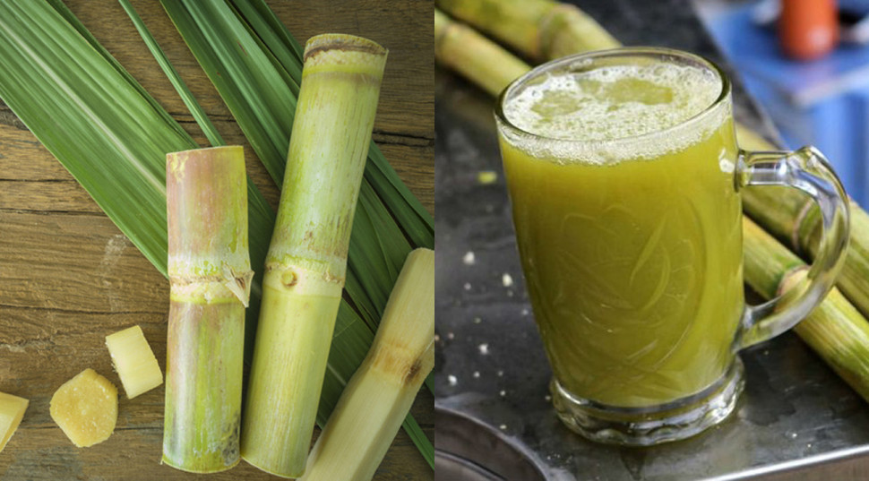
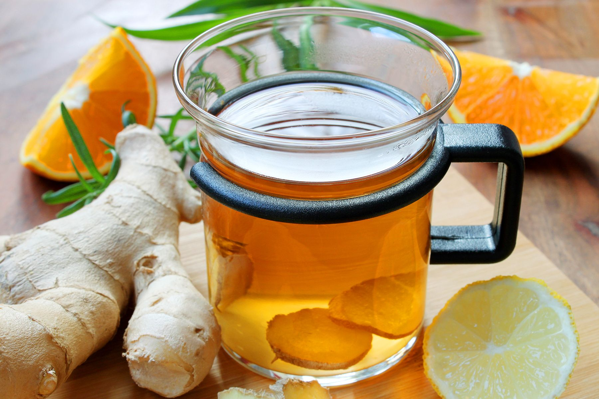

ទឹកអំពៅ (Teuk Ambok)
Fermented rice drink with a slightly sweet and tangy flavor.
ទឹកខ្ញី (Teuk Mreah)
Ginger and lemongrass herbal drink, often consumed warm for health benefits.
ទឹកមៀន (Teuk Mieng Khai)

A traditional herbal tea made from lemongrass and other herbs.
ទឹកអំពិលទុំ (Teuk Ampil Tum)

Sweet and slightly salty palm drink, traditionally served during festivals.
ទឹកតែជីអង្កាម (Teuk Chi Angkam)

Traditional fermented sugarcane drink, lightly sweet and refreshing.
កាហ្វេរតនគិរី (Coffee Rotanakiri)

Rich Cambodian coffee made from local Rotanakiri beans, served hot or iced.